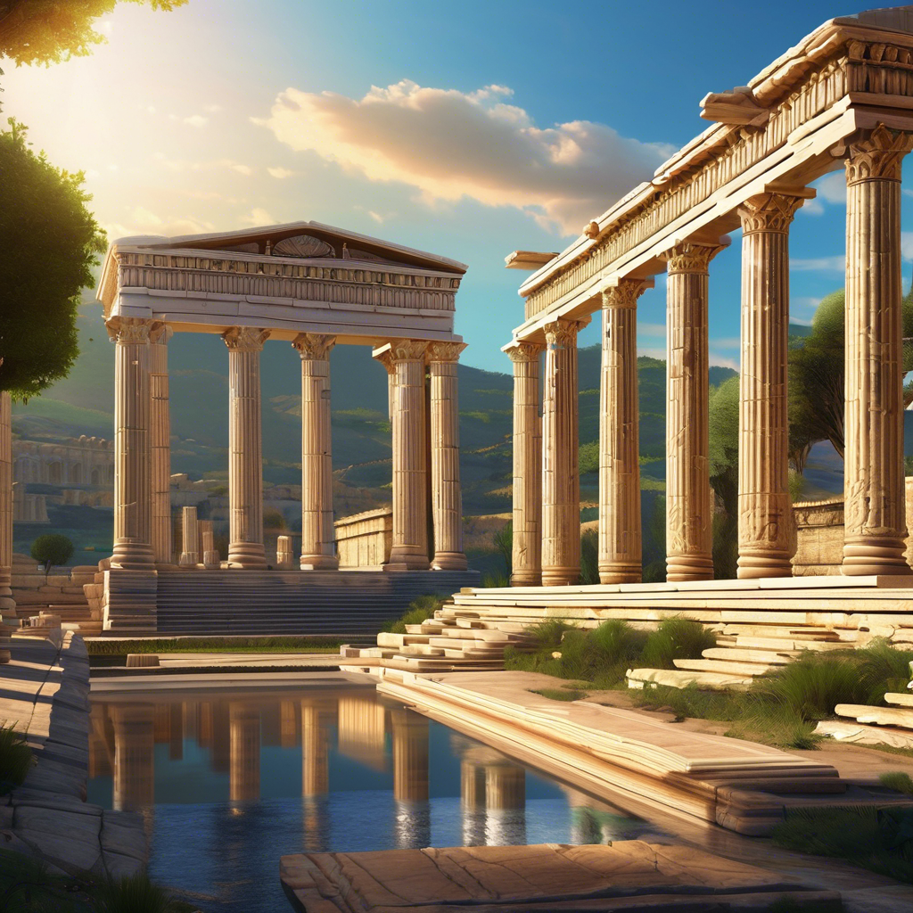

6 - Templo de Ártemis

“Fora o Olimpo, o Sol nunca viu algo tão grandioso”, disse Antípatro de Sidron em tributo ao Templo de Ártemis. O poeta grego foi um dos principais responsáveis por elencar as Maravilhas do Mundo Antigo. O templo, construído em mármore, era considerado um dos mais belos do mundo à época dentre cerca de 30 santuários construídos pelos gregos para honrar Ártemis, a deusa da caça, da vida selvagem e do nascimento. Tinha 91 metros de comprimento por 45 metros de largura.